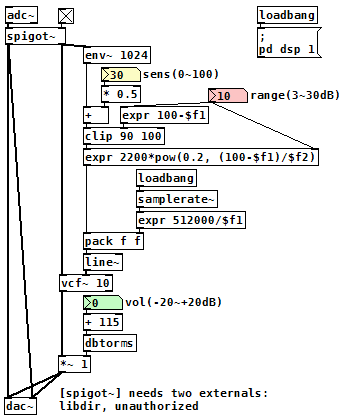

オートワウ（Pure Data パッチ）
2017年10月21日 カテゴリー：Pure Data
[env~]（エンベロープフォロワー）を使って音量データを取得し、それに応じてバンドパスフィルター(BPF)の中心周波数が変わるようにすれば、オートワウ（エンベロープフィルター）となります。中心周波数を揺らす場合のBPFは[vcf~]を使いますが、Q値が基本的に固定値となります。ペダルワウは中心周波数が高い時（ペダルを閉じたとき）Q値が小さくなりますが、そこまで再現しなくてもワウっぽい音にはなるようです。
（このパッチをダウンロード）
rangeコントロールは、中心周波数が最高（2200Hz）になる時と最低（440Hz）になる時の音量差を調整します。rangeが小さい方が、音量減衰時に周波数の変化が急（速くこもる）ということになります。
滑らかに中心周波数を変化させるため、周波数と変化にかける時間の数値を[pack]でまとめて[line~]に送ります。[env~ 1024]からは512サンプルごとに数値が出力されるため、変化にかける時間は、512÷44100で約12msという計算となります（44100サンプル時）。
LFOやタップテンポを入れ、周期的にワウをかけることも可能です。ただデジタルだからといって多機能にしすぎると、CPU負荷の問題が出てくるかもしれないので、シンプルな構成にしています。